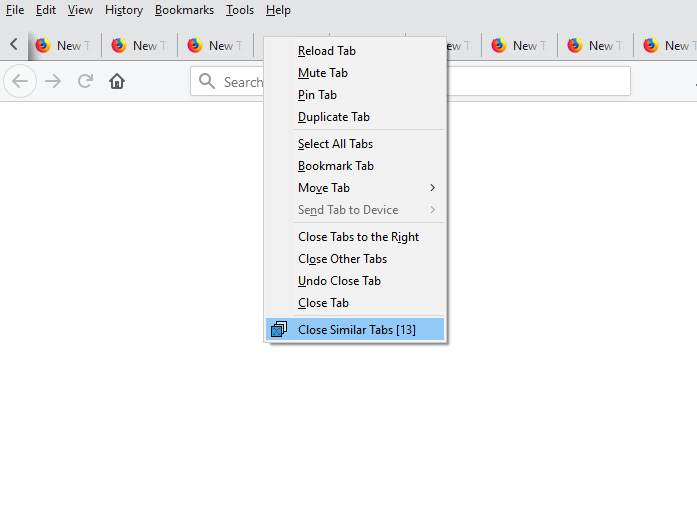

PROJECTS
A showcase of my coding projects - Continuous learning and exploration through creative works:
HTML5 Animation - Solar System
Date: 5/25/2019
I made this animation similating our solar system. The circles drawn on a HTML5 canvas represents different planets. Their orbit speed ratio is based off actual data and gives the animation a simple visual comparison, for example it takes Mars roughly twice as long to complete a orbit around the sun. Rather than leaving the orbit path blank I opted to draw strings of faint circles for each path. The animation is scaled down in the vertical axis giving it an added effect of depth. I've also added a MouseOver eventListener to make the animation interactive, it changes a planet's color red and display its name when the mouse is hovered over it. Note, the planets' size, distance and location are not scaled to real proportions. Made using HTML5 and JavaScript.
View the animation here: Solar System

Website Redesign with Bootstrap
Date: 5/17/2019
I've redesigned the website using the bootstrap framework. Utilizing this framework the website is now responsive to different screen sizes and useability has improved significantly when viewed on mobile, whereas the previous version was built specificaly for desktop users.
HTML5 Animation - Double Helix
Date: 5/15/2019
I started this project to experiment with the canvas element in HTML5. It started with simple circles drawn on the canvas which I then animated in JavaScript. I gave each circle a repeating elliptical path then drew a line joining coupled pairs. As each circle rotates along its path it will scale in size slightly, adding depth to the animation. This became a single layer which was then repeated in a stacked pattern. Each layer was given a unique velocity depending on its y position, this gave the animation an interesting helix-like effect. I then finally added a fade effect by adjusting the transparency at each layer also dependent to its y position. No frameworks, libraries or templates used.
View the animation here: Double Helix

Firefox Extension, Close Similar Tabs Version 2.0
Date: 5/8/2019
Since my Close Similar Tabs browser extension for Firefox was released on mozilla.org it has been downloaded several hundred times. I’ve received useful feedback from users; I have decided to implement some of these requested features. First, a simple way to view the number of similar tabs prior to activing the close action was requested. I’ve decided to implement a dynamic counter right into the drop-down menu which is displayed when any tab is right-clicked. It works by listening for the right-click event on a tab, once activated, all open tabs are parsed; similar tabs are tallied and displayed in brackets next the Close Similar Tab menu item. The second new feature is a confirmation before closing multiple tabs. Due to limitations of the WebExtensions API, I could not use a traditional windows dialog box similar to ones found on desktop applications, In order to mimic a dialog box, the extension opens a small browser window displaying an HTML page. The small window will ask for confirmation to close multiple tab and it will display the number of tabs affected. The window will also include UI elements such as buttons and checkboxes and the option for users to diable the feature in case they do not wish to see the dialog box again. The extension’s Options page was also updated with the ability to toggle on/off the confirmation dialog.
Download the Add-on for Firefox here
Firefox Extension, Close Similar Tabs
Date: 2/3/2018
My browser of choice is Mozzila Firefox. I find it to be fast, stable, user-friendly and I appreciate the open-source nature of the browser. I enjoy the many community developed browser extensions available online however there was one feature I really wish I had and could not find any suitable alternative. That is the ability to close multiple tabs of a specific website. When I browser the internet I tend to jump from one link to another by opening a new tab and leaving the previous tab open just in-case I need to jump back quickly without losing my place. Due to this habit the number of open tabs in the browser quickly increases to dozens or even hundreds over time and when it finally comes time to do a little “clean-up” I rather not visit every single open tab to make a decision of either closing it or leaving it open; at times I would like to close all tabs from one specific website. Thus I decided to develop a solution, the “Close Similar Tabs” extension. This small extension adds a feature to the drop-down menu activated when a user right-clicks any tab. The option “Close Similar Tabs” will parse through all open tabs and closes one which are similar to the activated tab with a single click!
I developed this extension using JavaScript, HTML, CSS and the WebExtensions API. It is released on addons.mozilla.org
Download the Add-on for Firefox here

Python script, Correlation between GDP per capita versus number of Secure Internet Servers in 2016
Date: 8/20/2017
The Woldbank not only offers economic metrics such as income levels and national GDP of various countries, it also has interesting statistics on topics such as infrastructure, health, social development and technology. In this project we look at the correlation between a nations GDP per capita index to the number of secure internet servers per 1 million people.
I wrote a Python script which requests data from the Worldbank API via URL call. The data sets are downloaded in JSON format and then parsed to extract the necessary information onto a .txt file. Using the visualization library Seaborn and the data analysis library Pandas the script generates a scatter plot with first and second order regression fit.
Results:
In general there exists a liner correlation between a nations GDP per capita to its number of secure internet servers. This follows the reasonable logic that as a nation becomes wealthier, the number of secure internet servers hosted there will also increase. Considering internet servers are an important part of a nation’s communication infrastructure and the technology required for its implementation, the number of internet servers in a country can be used to estimate its wealth. In this dataset there are some outliers including nations such as Switzerland, Iceland, Netherlands and Korea where the number of internet servers hosted there are higher when compared to other nations of similar GDP per capita. Examples of the opposite can also be seen for nations where the number of internet servers are comparably less than other nations of similar GDP per capita. Macao, China is an outliner which can be partially attributed to its state status. Macao is Special Administrative Region (SAR) of China meaning it is more similar to a region rather than a sovereign state. It is also one of the world’s smallest regions and its economy largely depends on service and tourism.

Python script, Investigating direct link sources on the /r/news subreddit
Date: 8/9/2017
/r/news is a subreddit on the social aggregation website Reddit. With approximately 14.9 million subscribers as of August 2017, /r/news is considered to be a high traffic subreddit. There, users can submit content which links to external sources so long as it follows the subreddit rules which are, as of writing this project: Posts will likely be removed if it is not news, is an opinion/analysis or advocacy piece, primarily concerns politics, has a title not taken from the article, has a pay wall or steals content, covers an already-submitted story, violates reddit's site-wide rules.
To analyze posts on /r/news I wrote a Python script using the PRAW (The Python Reddit API Wrapper) library to interface reddit’s API. The script extracts information of direct links submitted between January 1, 2017 and August 1, 2017. Information of 2327 posts were collected. The script then extracted the top 40 most frequently linked sources and displayed its frequency in a bar graph. Data visualization was achieved using the visualization library Seaborn and the data analysis library Pandas.
Results:
The most frequently linked source on /r/news between January 2017 and July 2017 is reuters.com an international news agency headquartered in London, England. Interestingly the top 4 linked source Reuters, BBC, The Guardian and Independent are all news agencies based in London, England. Only at 5th place do we see the first news source headquartered in USA which is NY Times.